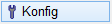
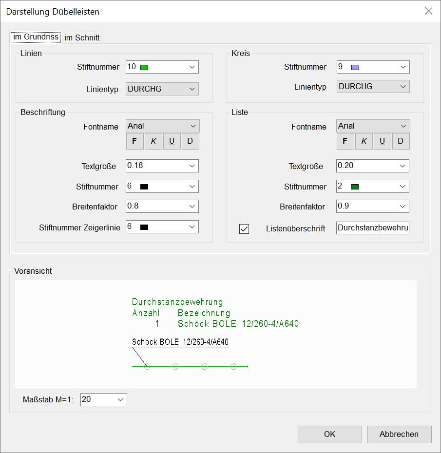

")
")
Konfiguration der Dübelleisten-Darstellung (Linientyp und -farbe, Beschriftung) sowie der Dübelleisten-Liste (Schriftart, Textformatierung, Titel). Öffnet den Dialog Darstellung Dübelleisten.
Optionen im Dialog "Darstellung Dübelleisten"
 |

Linien / Kreis Darstellung der Dübelleisten. Stiftnummer Auswahl der Stiftnummer für die Darstellung des Elements. Linientyp Auswahl des Linientyps, mit dem die Linie gezeichnet werden soll. Beschriftung Fontname Auswahl der Schriftart. In der Auswahlbox sind nur die Fonts aufgelistet, die in [Option | SysDat → Fontauswahl] vorausgewählt wurden. Textgröße Eingabe der Schriftgröße. Stiftnummer Text Auswahl der Stiftnummer für den Beschreibungstext. Breitenfaktor Angabe des Breitenfaktors. Um den Text platzsparend zu schreiben, muss der Breitenfaktor <1,0 sein. Stiftnummer Zeigerlinie Auswahl der Stiftnummer für die Zeigerlinien. Liste Textdarstellung und Titel in der Dübelleisten-Liste. Fontname Auswahl der Schriftart für die Tabelle. Textgröße Eingabe der Schriftgröße. Stiftnummer Auswahl der Stiftnummer für die Tabelle. Breitenfaktor Angabe des Breitenfaktors für die Texte der Liste. Listenüberschrift
|


Linien Darstellung der im Schnitt verlegten Dübelleisten. Stiftnummer Auswahl der Stiftnummer für die Darstellung des Elements. Linientyp Auswahl des Linientyps, mit dem die Linie gezeichnet werden soll. Beschriftung Fontname Auswahl der Schriftart. In der Auswahlbox sind nur die Fonts aufgelistet, die in [Option | SysDat → Fontauswahl] vorausgewählt wurden. Textgröße Eingabe der Schriftgröße. Stiftnummer Text Auswahl der Stiftnummer für den Beschreibungstext. Breitenfaktor Angabe des Breitenfaktors. Um den Text platzsparend zu schreiben, muss der Breitenfaktor <1,0 sein. Stiftnummer Zeigerlinie Auswahl der Stiftnummer für die Zeigerlinien. |
Voransicht
Darstellungsbeispiel mit den gewählten Parametern.
Maßstab M=1:
Auswahl des Größenverhältnisses zwischen Dübelleisten- und Textdarstellung.
Schaltflächen

Übernimmt alle Angaben und schließt den Dialog.

Verwirft alle Angaben und schließt den Dialog.